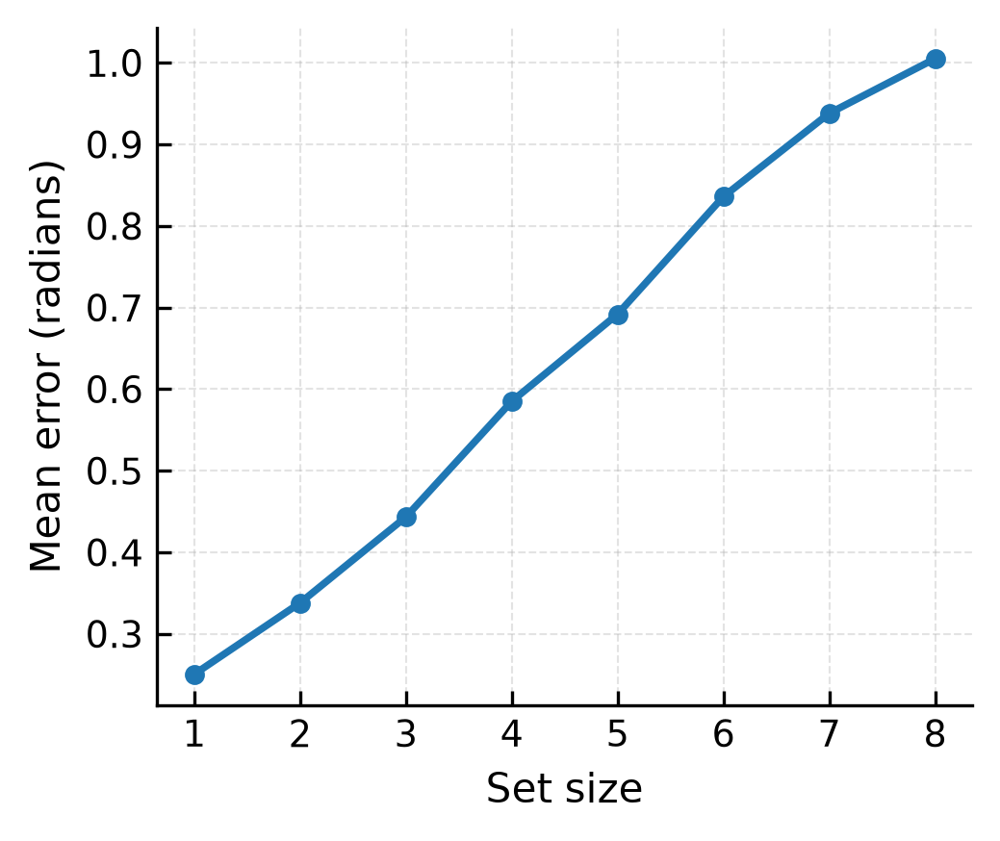
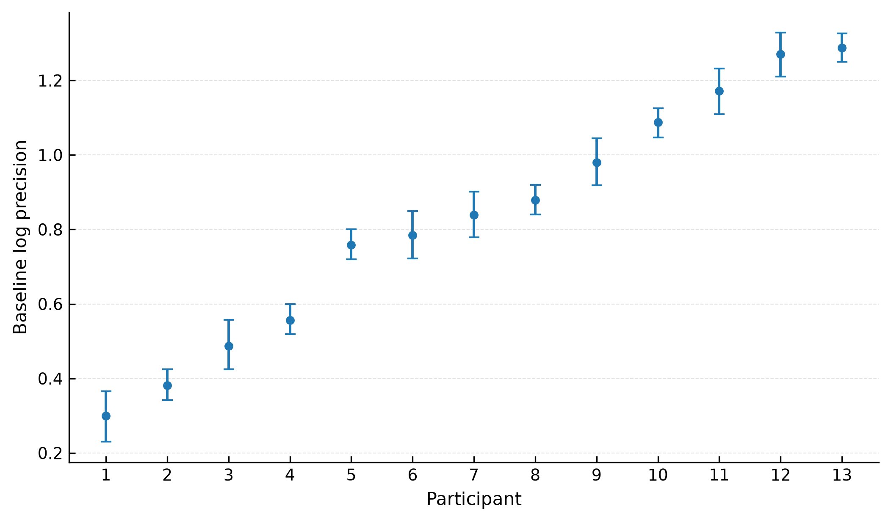
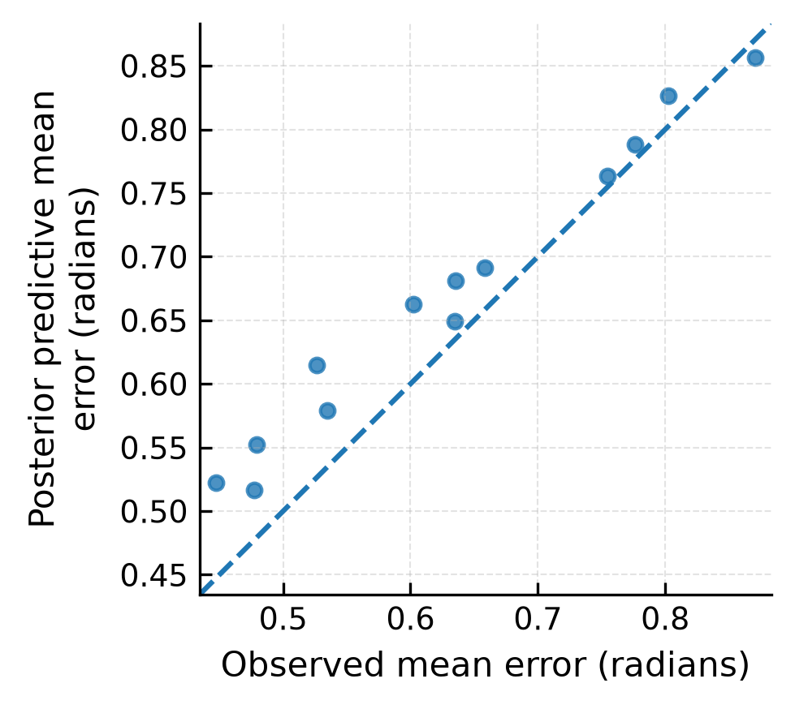
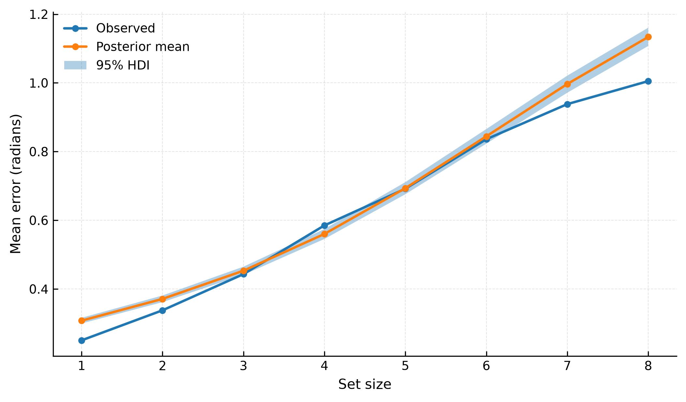

Overview
This project investigates how memory load influences visual working memory precision using trial-level data from an openly available continuous-report dataset. Using behavioral data from three visual working memory experiments, the study examines whether increasing set size is associated with reduced memory precision and whether individual differences can be captured using hierarchical Bayesian models. The project combines circular statistics, Bayesian modeling, predictive evaluation, and reproducible computational analysis within an open-science workflow.
Research Question
How does memory load influence visual working memory precision, and can hierarchical Bayesian models characterize individual differences and set-size effects in continuous-report performance?
Theoretical Background
Visual working memory is a central cognitive system that allows temporary storage and manipulation of visual information. Continuous-report tasks have shown that increasing memory load reduces the precision of remembered representations. This pattern has been studied through multiple theoretical accounts, including resource-based, slot-based, and variable-precision models. This project examines memory precision from a computational perspective by evaluating hierarchical Bayesian models that describe how precision changes across memory loads while accounting for individual variability.
Dataset
The analysis used an openly available visual working memory dataset originally reported by van den Berg et al. (2012) and distributed through the BenchmarksWM repository. The dataset included 37,824 trial-level observations from 13 participants across three continuous-report experiments. Participants reproduced remembered feature values under different memory loads, with performance quantified using circular angular error. The experiments included color memory with scrolling response, orientation memory with rotational response, and color memory with color-wheel response. Data validation confirmed the consistency of the dataset, and no observations were excluded.
Methods
The analysis pipeline included data validation, circular error analysis, descriptive statistics, hierarchical Bayesian modeling, posterior predictive checking, and predictive model comparison. Three Bayesian models were evaluated using a von Mises likelihood: a null model, a hierarchical model with participant-level variability and memory-load effects, and a nonlinear hierarchical model with set-size-specific effects. Models were fitted using Hamiltonian Monte Carlo sampling with the No-U-Turn Sampler (NUTS) implemented in PyMC. Model performance was evaluated using convergence diagnostics, posterior predictive checks, and leave-one-out cross-validation.
Key Findings
- Memory precision decreased systematically as memory load increased.
- Substantial individual differences were observed in baseline visual working memory precision.
- The hierarchical Bayesian model identified a strong negative relationship between set size and memory precision.
- The nonlinear hierarchical model provided the best predictive performance among the tested models.
- Posterior predictive checks showed that the selected model reproduced important characteristics of the observed error distributions.
- Robustness analyses showed stable conclusions across alternative priors, sampling configurations, and experiment-specific analyses.
Figures

Figure 1. Mean angular error across memory loads.

Figure 2. Individual differences in baseline memory precision estimated by the hierarchical Bayesian model.

Figure 3. Posterior predictive evaluation of individual participant-level error patterns.

Figure 4. Posterior predictive evaluation of the relationship between set size and recall error.
Discussion
The findings provide evidence that visual working memory precision decreases as memory load increases. The hierarchical Bayesian models captured both population-level changes in precision and individual differences among participants. The nonlinear model achieved the strongest predictive performance, suggesting that a flexible representation of memory-load effects described the observed behavioral data better than simpler alternatives. The study focuses on statistical modeling and reproducible analysis rather than proposing a new cognitive theory of visual working memory.
Limitations
- Reliance on an existing open dataset limits experimental control.
- The analyses focus on one continuous-report paradigm and may not generalize to all working memory tasks.
- The model comparison was limited to statistical formulations rather than direct comparisons among cognitive theories.
- The von Mises likelihood assumes a specific distributional structure for circular response errors.
Next Steps
Future work will extend this framework by evaluating theoretically motivated cognitive models within a hierarchical Bayesian framework. Additional directions include applying the workflow to other working memory datasets, incorporating experiment-level effects, and comparing alternative computational models of memory precision and variability.